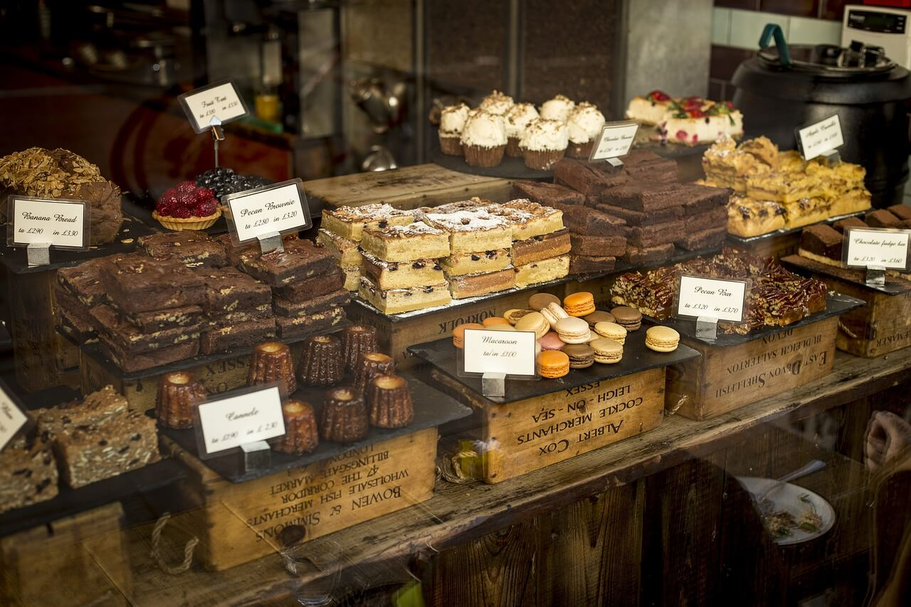

Magnolia Bakery, ubicada en el corazón de Nueva York, se erige como una joya icónica en la escena de la repostería de la ciudad. Desde el momento en que pones un pie en esta panadería, te envuelve un ambiente acogedor que te transporta a un rincón encantador lleno de delicias horneadas. Con su decoración sencilla pero elegante, Magnolia crea un espacio que invita a los visitantes a relajarse y disfrutar de la autenticidad de sus productos.
Sin lugar a dudas, los cupcakes son la estrella de Magnolia Bakery. Disponibles en una variedad de sabores, desde los clásicos de vainilla y chocolate hasta opciones más creativas y estacionales, cada bocado es una experiencia de sabor única. Pero lo que realmente distingue a estos cupcakes es la famosa cobertura de crema de mantequilla, suave y deliciosa, que eleva la experiencia a un nivel superior.
No obstante, la excelencia de Magnolia Bakery no se limita solo a los cupcakes. Su escaparate también alberga una selección tentadora de pasteles, pies, cookies y brownies. Cada uno de estos productos es cuidadosamente elaborado con ingredientes frescos y de alta calidad, reflejando el compromiso de la panadería con la excelencia en la repostería.
Es importante tener en cuenta que la popularidad de Magnolia Bakery a menudo se traduce en largas filas, especialmente en momentos pico. Sin embargo, la espera merece la pena para aquellos que buscan una experiencia auténtica de Nueva York. A pesar de las multitudes, el personal se esfuerza por ofrecer un servicio al cliente amable y eficiente.
En resumen, Magnolia Bakery no es simplemente una panadería, es una institución en la ciudad que ha dejado una marca indeleble en la cultura gastronómica neoyorquina. Su compromiso con la calidad, la autenticidad y la artesanía en la elaboración de productos horneados la convierte en un destino imprescindible para los amantes de la repostería que buscan una experiencia verdaderamente deliciosa en Nueva York.
